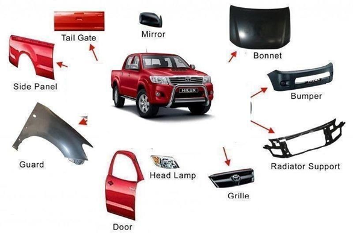
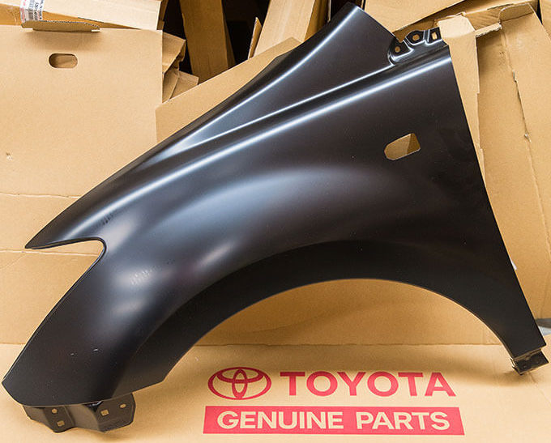

FJ Auto Parts is tredning for genuine toyota auto parts and auto spares in Zimbabwe.
If you need high quality aftermarket parts, services kits, car accessories or car care products to keep your vehicle in great shape, you've come to the right place.
You can enquire about our wide range of automotive products to find exactly what you need. Get the details of our location
using our handy map.

